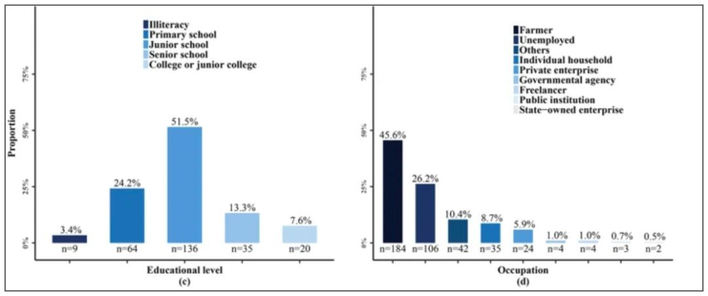
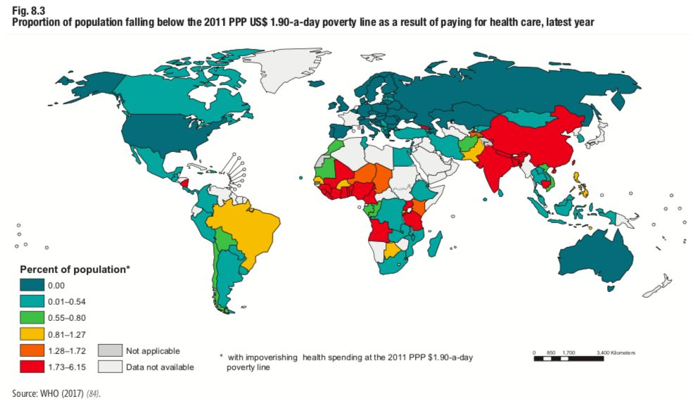
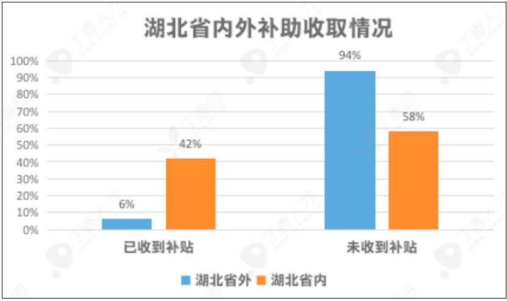

拥抱方舱医院的常态化，后疫情时代需要未雨绸缪
原文链接 备份链接 之前服务于方舱医院的GE医疗“诺亚一号” 一体式CT检查室，如今就在越来越多的医院落地。方舱医院的模式，也在湖北以外的更多省份开始走向常态化，为预防型公共卫生防疫体系的建设添砖加瓦。作为团队里年龄最小的光头护士，国文霞 …
本文作者：方可
随着各家方舱医院关闭，各省新增患者陆续归零，各地支援湖北地区医疗队开始返程，各省市医院逐步恢复普通门诊……国内新冠防疫工作进入了新的阶段。
方舱医院中和谐的医患关系能否复制？疫情之后，医患关系又会怎样发展？疫情时期的全民一心、团结支持，是否能帮助医患关系变得更好？

方舱医院里的医生和患者一起跳舞
（图源：央视新闻）
舆论宣传并不能代表患者就诊时的真实医疗体验，要讨论这个问题，我们需要先知道，此前影响医患关系的主要因素有哪些。
根据《2003～2012 年全国医院场所暴力伤医情况调查研究》[1] 中基于 459 例来自中国裁判文书网的暴力伤医案件分析显示，引发严重暴力伤医事件主要原因来自患者预期医疗质量与他们实际获得诊疗体验之间的差距，而导致这些差距的因素包括：等待时间、沟通、医疗质量、经济花费、治疗结果、死亡预后等。

引发严重暴力伤医事件主要原因分析
（图源：参考文献 1）
因此，要讨论医患关系是否会变好，即要分析这些决定因素是否得到缓解。
经济冲击：人群医疗可支配收入降低
在这场席卷全球的瘟疫中，许多国家都难免遭受严重的经济损失。3 月 19 日，联合国秘书长古特雷斯指出，受新冠肺炎疫情冲击，全球经济「几乎肯定」会发生衰退，并「有可能达到创纪录的规模」。
根据公开数据，国内 1～2 月工业生产、服务业生产指标均同比下降大于 10%，出口下降 15.9%，调查失业率上升（6.2%）。
经济下滑与失业增加都会影响全社会的衣食住行，虽然传染病的大规模流行和宣传教育会提高人们在健康和医疗上花费的意愿，但由于个人总体可支配收入下降，人们用于医疗保健、营养和个人卫生方面的开支可能减少，对医疗费用方面的敏感性也相应上升。
人们对医疗水平的期待往往和自身对医疗科学知识储备程度相关。《2003～2012 年全国医院场所暴力伤医情况调查研究》显示，以往的伤医案件中，「恶性伤医者大多受教育程度低，家庭多比较贫困，无业、农民、下岗及打工者占 7 成以上……并存在疾病无法治愈、支付医疗费困难等现象。」

79.1％ 嫌疑人未完成高中毕业，45.6% 为农民，26.2% 为无业人员（图源：参考文献 1）
低收入群体由于处于经济和社会资源的劣势地位，受到疫情冲击后收入和就业问题的远期影响可能更大，最后作用于医疗，可能造成医疗纠纷和暴力事件风险增加。
除个人经济能力受到冲击外，新冠肺炎的治疗过程本身也会消耗一定的医保经费，可用于其他疾病的医保经费比例就可能降低。根据近期发表的《深圳市 105 例新型冠状病毒肺炎患者住院费用及结构分析》一文，针对 105 名新冠肺炎患者的调查显示，平均每名新冠患者住院费用为 12288.53 元。
根据丁香园・丁香医生疫情地图数据，截至 3 月 23 日 14 时，全国累计确诊新冠肺炎患者 81649 例，估算累计住院费用可能超过 10 亿元。
随着各大医院开始恢复日常诊疗，大量疫情期间未就医的其他疾病的患者就医需求逐渐释放，在医保总额没有显著增加的情况下，一旦费用控制不到位，患者后半年报销比例下降或者报销困难的情况就可能发生。

由于支付医疗费用导致可支配收入低于贫困线的人群比例（WHO 2019 年全球卫生报告）
同时，由于医疗机构可能存在医护人员伤病、控制就诊人数等原因，一定时间内医疗机构可以提供的医疗资源总量反而可能减少——有限的预算，更多的花销，矛盾也许在所难免。
诊疗延迟：影响就诊环境、治疗效果
在疫情期间，由于大量人力、床位、设备等资源均被调用于传染病防控，加上预防院内交叉感染，各级医疗卫生机构不得不限制在治疗其他疾病方面的资源投入，如暂停或减少非急诊手术。
虽然在疫情期间，交通事故、创伤、醉酒等病因的患者可能减少，但大量非传染病患者的医疗需求暂时无法满足，存在药物和治疗中断的问题。一些病情上建议限期治疗或及早治疗的疾病，如肿瘤、心脑血管病，以及一些建议持续治疗患者，例如慢性肾病、精神障碍的患者都受到影响。
诊疗活动恢复后，部分科室患者可能出现就诊高峰。根据近期数据，目前国内医疗资源供给已经恢复到相当于去年同期 60% 的水平。仍然有三分之一以上没有恢复。
在疫情出现前，我国医疗结构床位和号源紧张的供求矛盾已经存在。目前，随着各地复诊高峰出现，医疗资源供给反而较前不足，可能出现患者排队时间等候时间延长、医疗秩序受到影响、就诊环境变差情况，导致医疗纠纷发生几率增加。
此外，延迟或中断诊疗会引起部分疾病患者的治疗成本增大，但预后和治疗效果反而可能会变差。治疗效果不佳本身就是医疗纠纷的重要诱因之一，部分患者对医疗过程中的并发症、不良事件是难以容忍或接受的，这个对医生的诊疗水平和沟通技巧都提出了更高的要求。
舆论宣传无法完全消除暴力
即便是在疫情最为严重的湖北，据不完全统计，自疫情爆发至今，公开报道的呵斥、殴打医护人员的案例已有三起。
1 月 19 日 18 时许，许某（女，55 岁，荆门市东宝区人）因交通事故身体多处受伤后被送至荆门市第一人民医院南院胸心外科抢救。1 月 20 日零时 30 分许，许某因抢救无效身亡。因质疑医生治疗过程,两名家属对值班医生柳某进行殴打。
武汉市硚口区公安分局官方微博发布通报，2020 年 1 月 30 日，硚口区公安分局接到市四医院（西区）报警称：「医院 12 楼有病人家属打医院护士」。经查，打人者柯某的岳父（68 岁）因病毒性肺炎于当日在医院去世，柯某情绪激动，抓扯并殴打医生头部和颈部，医生的口罩、防护服也被扯坏。
据新华社 2 月 21 日报道，一则武汉市第七医院患者无端训斥医护人员的视频在网络传播。湖北省市场监督管理局在核实该患者为该局后勤服务中心筹备组副组长朱保华后，将其停职检查。
此外，内蒙古鄂尔多斯市公安局东胜区分局 22 日通报称，2020 年 3 月 19 日东胜区发生的捅伤医生刑事案件，犯罪嫌疑人王某某于当日 20 时被刑事拘留，于 22 日 11 时提请检察机关批准逮捕。

图源：平安东胜
显然，在疫情期间短时间的高强度的卫生防疫和宣传工作，在庞大的人口基数和纷繁复杂的舆论环境下，舆论宣传并不足以消除社会背景下部分人群倾向于诉诸暴力的土壤。
此外，疫情防控期间密集的正面宣传提高了人们对医疗机构服务态度的期望值，医护人员「挺身而出、无私奉献、不畏艰险」的「天使化」形象为更多人所知。
但在真实的医疗情境下，在巨大的工作量面前，医务人员必须把有限的资源，分摊到每个患者身上，这会稀释每个患者享有的医疗服务质量和人文关怀的水平。
这样一来，实际的就诊体验很可能难以满足部分患者的期望，过高的心理预期带来的落差对医患关系本身是不利的。
医疗系统超负荷运转，医务人员急需关注
高强度的防疫工作可能对医务人员造成明显压力，影响医护人员的身心健康，损害医疗安全，造成不良事件发生率的上升。[2]

医务人员倦怠与不良医疗事件发生率呈正相关（参考文献 2）
经济方面，由于医院存在一定的垫付压力，加之医院的其他病种诊疗活动的减少，短期内医院工作人员的实际绩效工资可能降低，一线工作人员总体的薪酬待遇未必能达到既往同等水平。
丁香园调查数据显示，疫情期间，超八成医务人员收入降低。其中一半以上（56.3%）绩效、奖金受到影响，基本工资没有影响，29.4% 基本工资、绩效、奖金均受到影响，只有少数人（7.6%）的收入未受影响。

在防疫补助发放方面，丁香园调查数据显示，截至 3 月 11 日，仅 12% 的医务人员表示已经收到补助，88% 的人暂未收到。其中，湖北省内医务人员收到补助的比例较高，为 42%，但湖北省外仅有 6% 的医务人员表示收到了补助。

此外，一些医务人员因公殉职，永远离开了我们，还有许多人承受了巨大的身心压力，付出了巨大的牺牲。在 3 月 6 日国务院新闻办发布会上，中央指导组成员、国务院副秘书长丁向阳表示，疫情早期，湖北省有超过 3000 名医务人员感染。
3 月 21 日，《柳叶刀》发表最新社论，呼吁保护 COVID-19 疫情中的医务人员：「在未来很长一段时间里，全球医疗卫生系统可能会保持超负荷运转。但医务人员不是呼吸机或病房，不可能紧急生产或以 100% 的入住率长期运行。」

《柳叶刀》发表社论 COVID-19：保护医疗卫生工作者
文章指出，「至关重要的是，政府不能简单地将医务人员视为调配人员，而要记住他们是有血有肉的生命个体。在全球应对 COVID-19 疫情中，必须确保医务人员的安全。提供足够的个人防护装备只是第一步，同时必须考虑其他切实可行的措施，包括取消非必要的活动，确保资源优先用来应对疫情；保证所有医务人员获得足够的食物、充足的休息，来自家人的理解，以及足够的心理支持。目前，医务人员是每个国家最宝贵的资源。」
这次疫情的代价是异常沉重的，社会各界都付出了许多，虽然疫情会使社会各界重视健康，关注医疗卫生事业，但它对医疗行业本身依然是个不小的打击。
综合疫情防控全过程，医务人员健康状况、收入和满意度均可能出现下降，而这些都可能增加职业倦怠风险，影响医务人员工作积极性。无论是居民的经济条件、健康水平变化，还是医护人员身心压力与满意度，都可能对后续医疗质量与秩序带来负面效应。
疫情期间仍屡有发生的暴力事件已经告诉我们，舆论的力量对于解决上述一系列问题的能力是有限的，医疗卫生背后的经济问题和资源问题很难仅靠宣传教育去解决。法律是人们行为的底线，不是上限。我们也不可能仅靠立法或者事后惩戒去改变医院暴力背后的土壤。
这次席卷全球的疫情给我国的医疗系统带来的潜在影响和作用机制，仍需要社会各界更加深入的研究，并在各个环节采取全方位的干预措施。不论是加强分级诊疗、合理利用现有的医疗资源，还是完善社会保障、保护低收入人员的权益、促进经济增长和就业，这些对未来建设和谐的医患关系都有着非常重要的价值。
疫情远未结束，防控也只是进入了一个新阶段。现实告诉我们，挑战依然严峻，我们要做的还有很多。（责任编辑：gyouza）
题图来源：图虫创意
参考文献：
1.Cai R,Tang J,Deng C, et al. Violence against health care workers in China, 2013–2016: evidence from the national judgment documents. Hum Resour Health. 2019 Dec 26;17(1):103
2.Maria Panagioti,Keith Geraghty,Judith Johnson,et al. Association Between Physician Burnout and Patient Safety, Professionalism, and Patient Satisfaction A Systematic Review and Meta-analysis.JAMA Intern Med. 2018;178(10):1317-1331.
3.COVID-19: protecting health-care workers. The Lancet VOLUME 395, ISSUE 10228, P922, MARCH 21, 2020

丁香园 DXY
更懂中国医生
长按二维码向我转账
更懂中国医生
受苹果公司新规定影响，微信 iOS 版的赞赏功能被关闭，可通过二维码转账支持公众号。
原文链接 备份链接 之前服务于方舱医院的GE医疗“诺亚一号” 一体式CT检查室，如今就在越来越多的医院落地。方舱医院的模式，也在湖北以外的更多省份开始走向常态化，为预防型公共卫生防疫体系的建设添砖加瓦。作为团队里年龄最小的光头护士，国文霞 …
原文链接 备份链接 “湖北和武汉医疗救治、社区防控和后续工作任务依然艰巨繁重，其他地区人员流动和聚集增加带来疫情反弹风险依然存在。”唯有继续加大防控和排查力度，才有可能避免新冠肺炎疫情再次局部暴发 3月18日，武汉协和医院心外科候诊区，医 …
原文链接 备份链接 本 文 约 3700 字 阅 读 需 要 8 min 在本文的开头，首先有必要让读者明白，作者的讲述绝非完全可信。 我在意大利住了十多年，又是媒体记者，这次意大利疫情爆发以后，很多媒体都来找我，甚至有人愿意出丰厚的稿 …
原文链接 备份链接 凤凰新闻客户端 凤凰网在人间工作室出品 打开凤凰新闻客户端，搜索「在人间」并关注 我是深圳市第三人民医院肝病科的一名医生。春运期间，成千上万的武汉人涌入深圳。随着武汉疫情爆发，深圳也成了新冠病毒的“重灾区”。 1月22 …
原文链接 备份链接 受疫情期间影响，多地医保快速开通互联网医疗支付业务，但这距离行业的春天或许还远，长期的“医保份额”划定仍是瓶颈，找到其他的买单方也在探索期 文 |《财经》记者 辛颖 俞燕 编辑 | 王小 “我印象最深的线上问诊的提问 …